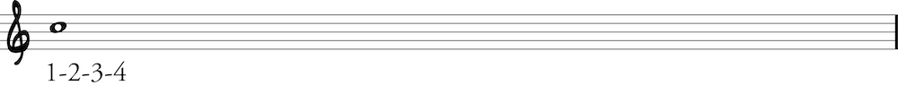
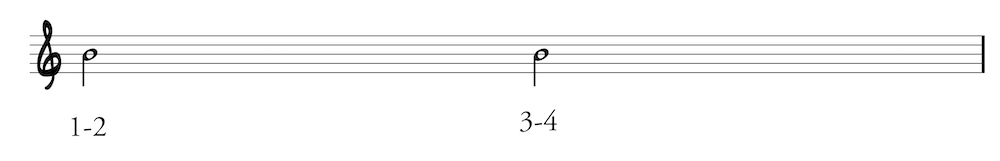
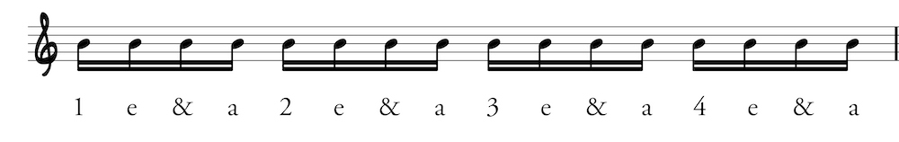
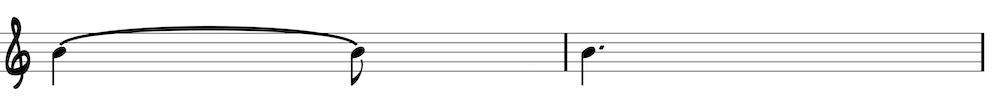
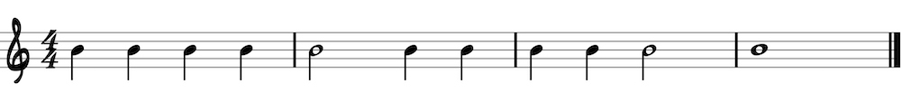
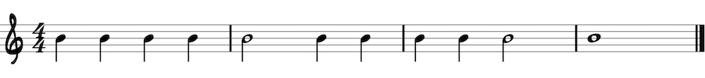
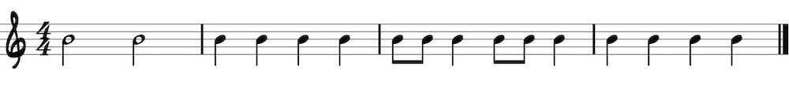

Intro to rhythmic notation
Note duration is represented by writing notes in different ways.
Whole note: 4 beats
Half note: 2 beats
Quarter note: 1 beat

Eighth note: 1/2 beat

Sixteenth note: 1/4 beat
Dotted notes and ties
Half note tied to quarter note = dotted half note = 3 beats
Quarter note tied to eighth note = dotted quarter note = 1.5 beats
Rests
A rest is a silence with the same rhythmic value as notes with the same duration. Mute the strings to “play” a rest.

Reading Rhythms
Practice reading the following rhythms by playing any note. Use a metronome to keep good time.
  
Strum patterns
This YouTube video discusses much of the same material as the lesson:
Learning to strum evenly is an essential skill for every beginning guitarist. Keep your right arm and pick in constant motion. This helps you to feel the beat. Practice these strum patterns with a metronome (or drum beat) at varying tempos to develop a good time feel. These examples are a starting point. Come up with your own strum patterns by adding or omitting eighth-note strums.
First, you must first learn two symbols: the downstroke symbol resembles a top hat; the upstroke symbol is a V.

Example 1
Play even quarter notes with downstrokes. This is the basis for all other strum patterns.
Example 2
No additional motion is necessary to play eighth notes; simply play an upstroke on your way back up.

Example 3
To connect the and-of-two and beat three with a tie, play a “silent downstroke” on beat three. Make the downstroke motion without actually touching the strings.
Example 4
This example is similar to example three but with no upstroke on the and-of-four.
Example 5
This example is similar to example four but with no upstroke on the and-of-one.
Back: Easy songs to learn Next: The blues shuffle